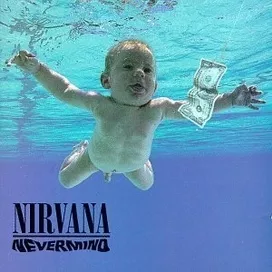

Sweet Child o Mine
She's got a smile it seems to me
Reminds me of childhood memories
Where everything
Was as fresh as the bright blue sky
Now and then when I see her face
She takes me away to that special place
And if I'd stare too long
I'd probably break down and cry
Oh, oh, oh
Sweet child o' mine
Oh, oh, oh, oh
Sweet love of mine
She's got eyes of the bluest skies
As if they thought of rain
I hate to look into those eyes
And see an ounce of pain
Her hair reminds me of a warm safe place
Where as a child I'd hide
And pray for the thunder
And the rain
To quietly pass me by
Oh, oh, oh
Sweet child o' mine
Oh, oh, oh, oh
Sweet love of mine
Oh, oh, oh, oh
Sweet child o' mine
Oh, oh, oh, oh
Sweet love of mine
Oh, oh, oh, oh
Sweet child o' mine
Oh yeah yeah
Oh oh sweet love of mine
Where do we go?
Where do we go now?
Where do we go?
Oh, oh
Where do we go?
(Where do we go now?)
Oh where do we go now? (Where do we go?)
Where do we go? (Sweet child)
Oh where do we go now?
Ay ay ay ay (where do we go now, where do we go)
Oh where do we go now?
Where do we go?
Oh, where do we go now?
Oh, where do we go?
Oh where do we go now?
Where do we go?
Oh, where do we go now?
No, no, no, no, no, no
Sweet child
Sweet child of mine

Come as You Are
Come as you are, as you wereAs I want you to be
As a friend, as a friend
As an known enemy
Take your time, hurry up
The choice is yours, don't be late
Take a rest as a friend
As an old
Memoria, memoria
Memoria, memoria
Come doused in mud, soaked in bleach
As I want you to be
As a trend, as a friend
As an old
Memoria, memoria
Memoria, memoria
And I swear that I don't have a gun
No I don't have a gun
No I don't have a gun
Memoria, memoria
Memoria, memoria
(No I don't have a gun)
And I swear that I don't have a gun
No I don't have a gun
No I don't have a gun
No I don't have a gun
No I don't have a gun

Somebody to Love
Can anybody find me somebody to love?Ooh, each morning I get up I die a little
Can barely stand on my feet
(Take a look at yourself) Take a look in the mirror and cry (and cry)
Lord, what you're doing to me (yeah yeah)
I have spent all my years in believing you
But I just can't get no relief, Lord!
Somebody (somebody) ooh somebody (somebody)
Can anybody find me somebody to love?
I work hard (he works hard) every day of my life
I work 'til I ache in my bones
At the end (at the end of the day)
I take home my hard earned pay all on my own
I get down (down) on my knees (knees)
And I start to pray
'Til the tears run down from my eyes
Lord, somebody (somebody), ooh somebody
(Please) can anybody find me somebody to love?
Everyday (everyday) I try and I try and I try
But everybody wants to put me down
They say I'm going crazy
They say I got a lot of water in my brain
Ah, got no common sense
I got nobody left to believe in
Yeah yeah yeah yeah
Oh, Lord
Ooh somebody, ooh somebody
Can anybody find me somebody to love?
(Can anybody find me someone to love)
Got no feel, I got no rhythm
I just keep losing my beat (you just keep losing and losing)
I'm OK, I'm alright (he's alright, he's alright)
I ain't gonna face no defeat (yeah yeah)
I just gotta get out of this prison cell
One day (someday) I'm gonna be free, Lord!
Find me somebody to love
Find me somebody to love
Find me somebody to love
Find me somebody to love
Find me somebody to love
Find me somebody to love
Find me somebody to love
Find me somebody to love love love
Find me somebody to love
Find me somebody to love
Somebody somebody somebody somebody
Somebody find me
Somebody find me somebody to love
Can anybody find me somebody to love?
(Find me somebody to love)
Ooh
(Find me somebody to love)
Find me somebody, somebody (find me somebody to love) somebody, somebody to love
Find me, find me, find me, find me, find me
Ooh, somebody to love (Find me somebody to love)
Ooh (find me somebody to love)
Find me, find me, find me somebody to love (find me somebody to love)
Anybody, anywhere, anybody find me somebody to love love love!
Somebody find me, find me love